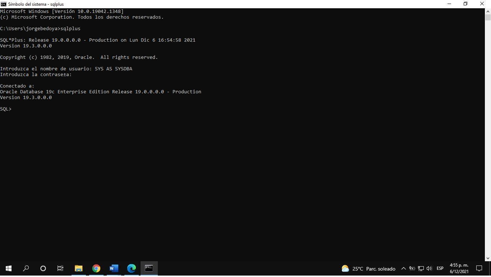

SQL Plus es un programa en línea de comandos, perteneciente al motor de bases de datos Oracle, que permite ejecutar instrucciones SQL y PL/SQL. Ha sido la interfaz, con la que el usuario puede interactuar con la base de datos, mas antigua, vigente desde la versión 2 del motor.
Para ejecutar SQL Plus, hay que ir a la consola de Windows (CMD) y digitar sqlplus. Al entrar al aplicativo, hay que digitar con qué usuario se desea establecer conexión, y su respectiva contraseña.
Dentro de SQL Plus, hay una serie de comandos que permiten hacer mas amigable el uso de la herramienta. La siguiente es una lista de comandos que se pueden usar dentro de SQL Plus:
| Comando | Funcionalidad | Ejemplo |
| help index | Permite ver un listado de todos los comandos propios de SQL Plus que podemos utilizar | help index |
| help <comando> | Permite mirar la ayuda disponible para el comando especificado | help show |
| show <parámetro> | Muestra el valor actual del parámetro especificado | show sga |
| show parameters | Muestra el listado de todos los parámetros actuales con su respectivo valor. | show parameters |
| set <parametro> valor | Asigna un valor a un parámetro específico | set ECHO off |
| exit | Sale de la sesión de sqlplus | exit |
| l | Muestra el comando que está almacenado en el buffer | l |
| r | Ejecuta el comando que está en el buffer | r |
| c | Reemplaza un string por otro en una instrucción | c.SYSDATE.*. |
| DEL <numero de línea> | Borra de la última instrucción la línea especificada | DEL 2 |
| ed | Activa el editor de texto (bloc de notas) con el ultimo comando SQL ejecutado. | ed |
Video: